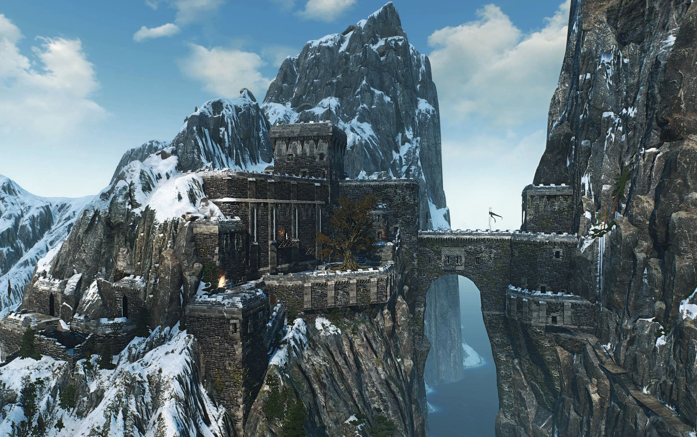

Kaer Trolde
monumentální kamenná pevnost nacházející se na severním pobřeží Ard Skellig, největšího z ostrovů souostroví Skellige.
Slouží jako rodové sídlo mocného klanu an Craite a představuje jedno z nejdůležitějších politických, ekonomických a strategických center v celém zaklínačském světě.
Pevnost Kaer Trolde je mistrovským dílem středověkého stavitelství adaptovaného na drsné severské podmínky.
Je vytesána přímo do masivní skalní stěny vysoko nad mořem.
Tato pozice poskytuje obráncům dokonalý přehled o širokém okolí a prakticky znemožňuje jakýkoliv přímý útok z pevniny i z moře.
Přímo pod pevností se nachází rušný přístav Kaer Trolde.
Je chráněný před nepřízní otevřeného oceánu a slouží jako kotviště pro proslulé skelligské drakkary (dlouhé lodě) a obchodní plavidla z celého Kontinentu.
Přístav s hradem spojuje strmá cesta a také unikátní mechanický výtah určený pro transport těžkého nákladu.
V severské kultuře Skellige, kde vládne decentralizovaný systém jarlů (kmenových vůdců), má Kaer Trolde výsadní postavení.
Velká hodovní síň v Kaer Trolde je místem, kde se rozhoduje o osudu ostrovů.
Pořádají se zde klíčové hostiny, rituály a politická vyjednávání mezi nepřátelskými klany.
Právě zde se často volí nový král celého Skellige po smrti předchozího panovníka.
Ard Skellig
největší, nejlidnatější a politicky nejvýznamnější ostrov celého souostroví Skellige.
Je to srdce severské kultury, kde sídlí nejmocnější klany a kde se rozhoduje o osudu všech ostrovanů.
Ard Skellig je ostrov plný dramatických přírodních kontrastů. Jeho krajinu formoval ledový oceán a neustálé větry.
Severu dominují masivní, sněhem pokryté horské hřebeny a hluboké borovicové lesy.
Pobřeží tvoří strmé útesy vytesané do moře, v nichž leží i pevnost Kaer Trolde.
Směrem na jih se hory svažují do mírnějších kopců, rašelinišť a údolí.
Zde se nachází více zemědělské půdy, pastevin a menších vesnic (např. Fyresdal nebo Holmstein).
Také se zde nachází mnoho různých klanů např. Klan an Craite, Klan Drummond a Klan Brokvar.
Společnost si cení odvahy, cti, síly a loajality ke klanu.
Muži i ženy běžně bojují a podnikají vikingské nájezdy na pobřeží Nilfgaardu a Severních království.
Hlavní náboženskou postavou je Velká matka Freyja.
Její kněžky mají obrovskou autoritu.
Undvik
Pátý největší ostrov souostroví Skellige, který se nachází v jeho jihozápadní části.
mrazivý ostrov duchů, který byl zcela zdevastován a vylidněn.
Undvik byl kdysi nádherným ostrovem plným prosperujících kovářských dílen, rybářských osad a úrodných údolí.
Vše se změnilo s příchodem mýtické nestvůry.
Ostrov napadl a ovládl Ledový gigant (prastarý, nesmírně silný obr).
Monstrum s sebou přineslo věčnou zimu, mráz a hordy sirén a harpyjí.
i, kteří útok obra přežili, museli ostrov narychlo opustit.
Většina uprchlíků našla azyl na sousedním ostrově Ard Skellig.
Zbyly po nich jen opuštěné, zamrzlé vesnice.
Ostrovu dominuje masivní zamrzlé jezero, hluboké jeskynní systémy a vrak obří lodi, kterou gigant dotáhl na vrchol jedné z hor jako své bizarní hnízdo.
Hjalmar, syn jarla Cracha, se rozhodne dokázat svou odvahu a právo na královský trůn tím, že odpluje na Undvik a Ledového giganta zabije.
Jeho výprava však skončí katastrofou a většina jeho mužů zemře.